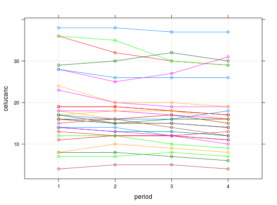

Dados referentes a um experimento em que 30 ratos tiveram uma condição de leucemia induzida, sendo submetidos, posteriormente, a três drogas quimioterápicas. Foram coletadas de cada animal a quantidade de células brancas, a quantidade de células vermelhas e o número de colônias de células cancerosas, em três períodos diferentes.
Um data.frame com 120 observações e 5 variáveis.
ratoperiodtratcelubranceluvermcelucancPAULA (2004), Exercício 5.6.14, pág. 401.
Myers, R.H.; Montgomery, D. C. e Vining, G. G. (2002). Generalized Linear Models: With Applications in Engineering and the Sciences. John Wiley, New York.
library(lattice) data(PaulaEx5.6.14)#> Warning: data set ‘PaulaEx5.6.14’ not foundstr(PaulaEx5.6.14)#> 'data.frame': 120 obs. of 6 variables: #> $ rato : Factor w/ 30 levels "1","10","11",..: 1 1 1 1 12 12 12 12 23 23 ... #> $ period : Factor w/ 4 levels "1","2","3","4": 1 2 3 4 1 2 3 4 1 2 ... #> $ trat : Factor w/ 3 levels "1","2","3": 3 3 3 3 3 3 3 3 3 3 ... #> $ celubran: int 15 18 19 24 8 11 14 14 4 5 ... #> $ celuverm: int 2 3 2 5 2 4 4 5 7 5 ... #> $ celucanc: int 14 14 12 11 17 18 18 16 23 20 ...xtabs(~period + trat, data = PaulaEx5.6.14)#> trat #> period 1 2 3 #> 1 10 10 10 #> 2 10 10 10 #> 3 10 10 10 #> 4 10 10 10xyplot(celucanc ~ period, groups = rato, type = c("p", "g", "a"), data = PaulaEx5.6.14)